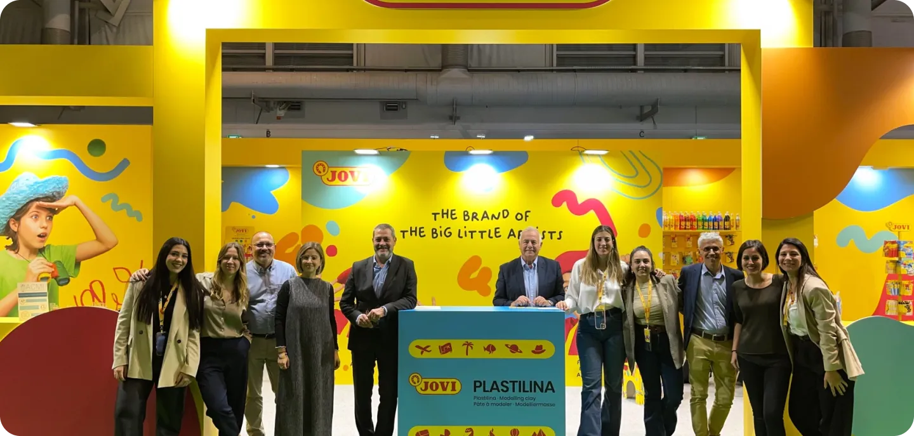
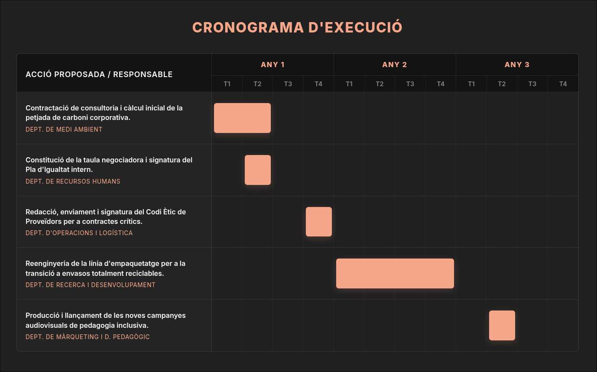
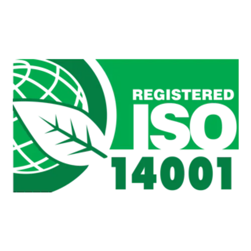
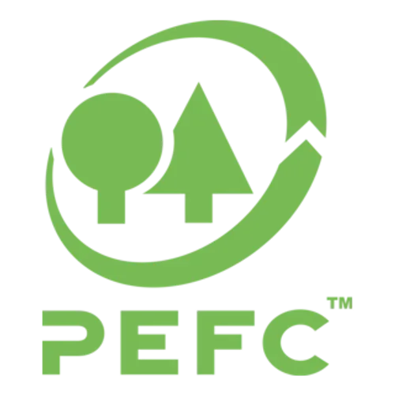
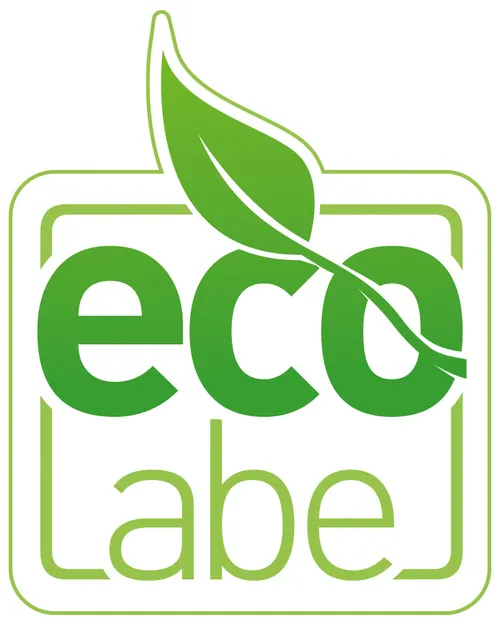

Dissenyant un futur educatiu mitjançant l'ecologia industrial i la responsabilitat social.
Aquest Pla de Sostenibilitat detalla l'estratègia de JOVI S.A. per integrar l'ecologia industrial i l'equitat social en el seu model de producció de material escolar. El nostre compromís general s'emmarca en la filosofia corporativa JOVI for Future alineant les nostres operacions amb els Objectius de Desenvolupament Sostenible per garantir una educació de qualitat i un consum responsable en totes les nostres fases operatives.

JOVI S.A. opera en el sector de la manufactura de material escolar educatiu i de belles arts. L'empresa compta amb una plantilla d'entre cinquanta-un i cent treballadors consolidant-se com una entitat mitjana en el teixit industrial català. Les seves operacions centrals es desenvolupen en una planta de sis mil metres quadrats ubicada a Rubí infraestructura que es complementa amb un centre logístic al Prat de Llobregat orientat a l'exportació internacional. Entre els seus productes més destacats es troben pastes de modelar innovadores com la Plastilina Baby i articles tradicionals d'escriptura i il·lustració infantil.
La filosofia de la corporació s'articula sota el marc estratègic JOVI for Future. La seva visió oficial consisteix a somiar amb un futur per a totes les persones. Per assolir aquest propòsit estratègic la missió i els valors de l'empresa se sustenten en tres pilars fonamentals. En primer lloc destaca la inclusió social per crear oportunitats en igualtat de condicions. En segon lloc ressalta el desenvolupament de productes sostenibles mitjançant la transició cap a l'ecologia industrial. Finalment figura el foment d'un entorn laboral segur concebut per al creixement del seu capital humà.
Encara que l'estructura directiva nominal de l'empresa és de caràcter privat el funcionament de la companyia s'articula a través de diversos departaments operatius clau. Existeix un departament de Qualitat Medi Ambient i Assumptes Regulatoris encarregat de mantenir les normatives internacionals i controlar la traçabilitat dels materials. A aquest s'hi suma l'àrea d'Investigació Desenvolupament i Innovació Tecnològica responsable de l'enginyeria química i el disseny de noves formulacions. Així mateix operen un departament d'Operacions Logística i Comerç Internacional per gestionar la xarxa d'exportacions juntament amb una unitat de Màrqueting Desenvolupament Pedagògic i relacions Business to Business.
L'activitat industrial i comercial de la companyia involucra diversos actors essencials. Els clients i la comunitat educativa representen un grup fonamental el qual es beneficia de productes d'alta seguretat lliures d'al·lèrgens i de plataformes digitals proveïdes de recursos pedagògics gratuïts. Els treballadors conformen un altre nucli prioritari emparat per compromisos formals de millora del benestar laboral. A la cadena de subministrament destaquen els proveïdors de matèries primeres els quals han de complir amb estàndards rigorosos de sostenibilitat forestal per al subministrament de fusta. Finalment la comunitat local de Rubí constitueix un grup d'interès amb el qual la corporació col·labora activament mitjançant projectes urbans d'integració social i artística.
L'anàlisi de la situació actual de JOVI S.A. es fonamenta en el seu acompliment operatiu recent i en el seu posicionament dins del sector de la manufactura escolar. Aquesta diagnosi avalua les fortaleses i debilitats internes juntament amb les oportunitats i amenaces de l'entorn socioeconòmic.
L'acompliment ambiental revela un compromís sòlid cap a l'ecologia industrial. La planta principal destaca per la recent integració del certificat ISO 14001 i l'ampliació de les seves instal·lacions fotovoltaiques per fomentar l'autoconsum energètic. A més la política de compres exigeix fusta amb segell forestal PEFC per a tota la seva línia de llapis i l'equip d'enginyeria treballa en el redisseny d'envasos amb l'objectiu de fer-los totalment reciclables. Com a punt de millora es detecta una notable opacitat informativa ja que la corporació no fa públics els seus inventaris d'emissions de gasos d'efecte hivernacle ni els volums totals de consum hídric o elèctric.
En el terreny de la responsabilitat social la companyia sobresurt per la seva extrema cautela en la gestió de la bioseguretat. La formulació de productes lliures dels principals al·lèrgens com la innovadora Plastilina Baby garanteix la màxima seguretat de l'alumnat infantil. També destaca el seu impacte positiu en la comunitat mitjançant el desenvolupament de plataformes de recursos pedagògics digitals gratuïts i l'organització d'esdeveniments artístics d'integració veïnal. Això no obstant existeix una mancança significativa en la transparència interna atès que no hi ha registre públic del Pla d'Igualtat exigit per la normativa laboral vigent per a plantilles de la seva magnitud.
La dimensió econòmica projecta un escenari d'alta solvència amb un creixement extraordinari del benefici operatiu i una rendibilitat d'explotació propera al deu per cent durant els darrers exercicis. L'exportació constant a més de vuitanta països i l'auditoria externa dels seus estats financers demostren una arquitectura comercial robusta sustentada operativament en la norma ISO 9001. No obstant això el marc de governança de la cadena de subministrament presenta certes vulnerabilitats en mancar d'un Codi Ètic de Proveïdors de caràcter públic que exigeixi el compliment ineludible d'estàndards ambientals i laborals a les empreses subcontractades.
Integració efectiva de sistemes de gestió ambiental i de qualitat certificats a escala internacional.
Altíssima rendibilitat operativa que permet finançar de manera contínua la innovació en laboratori.
Rigorós control toxicològic preventiu en totes les formulacions destinades al públic infantil.
Opacitat informativa en les dades absolutes de consums energètics i inventari d'emissions.
Absència d'un Pla d'Igualtat publicat oficialment als canals de transparència corporativa.
Falta d'un Codi Ètic de Proveïdors accessible per garantir la sostenibilitat total a la cadena de valor.
Consolidació del lideratge en mercats institucionals exigents mitjançant el catàleg lliure d'al·lèrgens.
Desacoblament dels costos elèctrics industrials gràcies a l'aposta ferma per l'ampliació fotovoltaica.
Demanda creixent de materials educatius que promoguin la consciència ecològica des d'edats primerenques.
Pressió comercial constant exercida per fabricants asiàtics amb estructures de costos productius més baixes.
Enduriment sostingut de les normatives europees en matèria de disseny i etiquetatge d'envasos plàstics.
Riscos inherents a l'ús de compostos químics en productes manipulats massivament per menors d'edat.
S'han definit cinc objectius estratègics distribuïts de manera equilibrada entre els tres àmbits fonamentals. Tots ells compleixen els criteris de ser específics mesurables assolibles rellevants i temporals.
Descripció breu: Assolir la total transparència ambiental mesurant i publicant la petjada de carboni corporativa.
Indicador: Publicació de l'inventari anual d'emissions directes i indirectes.
Termini: Curt termini. | Responsable: Departament de Medi Ambient.
Descripció breu: Assolir la fita d'envasos totalment reciclables eliminant els plàstics multicapa de la cadena de producció.
Indicador: Percentatge d'envasos de nova producció fabricats exclusivament amb monomaterials reciclables.
Termini: Mitjà termini. | Responsable: Departament d'Investigació i Desenvolupament.
Descripció breu: Formalitzar el compromís amb l'equitat interna mitjançant l'aprovació del Pla d'Igualtat exigit per la legislació vigent.
Indicador: Aprovació oficial i publicació del document al portal corporatiu de la companyia.
Termini: Curt termini. | Responsable: Departament de Recursos Humans.
Descripció breu: Consolidar la sostenibilitat a la cadena de subministrament implementant un Codi Ètic de Proveïdors.
Indicador: Percentatge de proveïdors crítics que han signat formalment el nou codi de conducta.
Termini: Mitjà termini. | Responsable: Departament d'Operacions i Logística.
Descripció breu: Expandir la fidelització del mercat institucional augmentant l'abast de la plataforma educativa digital.
Indicador: Nombre mensual de descàrregues de recursos pedagògics per part de la comunitat docent.
Termini: Llarg termini. | Responsable: Departament de Màrqueting i Desenvolupament Pedagògic.
Per assegurar la viabilitat tècnica i financera dels objectius plantejats es proposen les següents accions concretes dissenyades específicament per a l'escala econòmica d'aquesta indústria manufacturera.
Descripció: Contractació d'una consultoria externa especialitzada per auditar la fàbrica calcular la petjada de carboni integral i establir una línia base d'emissions.
Recursos necessaris: Hores de dedicació del personal intern per demanar factures i dades de consum energètic juntament amb els serveis tècnics dels consultors.
Cost aproximat: Dotze mil euros.
Beneficis esperats: Compliment de les expectatives de transparència del mercat internacional i obtenció de la mètrica exacta necessària per dissenyar futures inversions en eficiència energètica.
Descripció: Execució d'un projecte de reenginyeria a la línia d'empaquetatge de Rubí per substituir els plàstics complexos per alternatives de cartró d'origen certificat o polímers d'un sol material.
Recursos necessaris: Hores d'enginyeria aplicada disseny de nous encunys i adaptació electromecànica de la maquinària d'envasat actual.
Cost aproximat: Quaranta-cinc mil euros.
Beneficis esperats: Reducció dràstica de l'impacte ambiental dels productes al final de la seva vida útil i anticipació estratègica a les severes normatives europees sobre gestió de residus d'envasos.
Descripció: Constitució de la comissió negociadora amb els representants dels treballadors per auditar l'estructura retributiva i redactar el protocol de foment de la diversitat.
Recursos necessaris: Assessorament legal especialitzat en dret laboral i temps de treball remunerat per a les reunions de la comissió interna.
Cost aproximat: Vuit mil euros.
Beneficis esperats: Compliment estricte del marc normatiu espanyol correcció de possibles bretxes salarials històriques i millora substancial de la motivació en l'entorn de treball.
Descripció: Redacció d'un document vinculant que exigeixi el compliment d'estàndards ecològics i laborals bàsics integrant-lo com a requisit indispensable en la renovació dels contractes de compra de resines cel·lulosa i fustes.
Recursos necessaris: Personal de l'àrea corporativa legal i dedicació administrativa per a la gestió documental amb tota la cartera de contractistes.
Cost aproximat: Cinc mil euros.
Beneficis esperats: Mitigació de riscos reputacionals i blindatge de l'ètica comercial assegurant que les bones pràctiques s'apliquin en totes les fases prèvies a la fabricació de les ceres i llapis.
Descripció: Creació de noves campanyes de vídeo formatiu enfocades en l'ús segur de pastes de modelar lliures d'al·lèrgens per a aules amb alumnat que presenta necessitats especials d'immunitat.
Recursos necessaris: Equip de producció audiovisual extern i educadors especialitzats en pedagogia inclusiva per a la conceptualització tècnica del contingut.
Cost aproximat: Quinze mil euros.
Beneficis esperats: Consolidació de la marca com a aliat estructural insubstituïble per a les escoles i administracions públiques garantint la retenció de clients institucionals a llarg termini.
Per garantir que el pla de sostenibilitat s'apliqui de manera estricta i no quedi com una simple declaració d'intencions la direcció executiva implementarà un sistema de seguiment exhaustiu basat en la recol·lecció de dades reals.
El control del pla s'articularà a través de cinc indicadors clau de rendiment estretament vinculats a cada objectiu. En l'àmbit ambiental mesurarem el volum d'emissions de diòxid de carboni equivalent per cada tona de producte fabricat i calcularem el percentatge exacte d'envasos monomaterials reciclables introduïts a la cadena logística. En el terreny social l'indicador serà binari i avaluarà la fase de tramitació i aprovació definitiva del Pla d'Igualtat. Finalment per a l'àmbit econòmic quantificarem la taxa percentual de proveïdors estratègics adherits al nou codi de conducta i el nombre d'usuaris únics mensuals que accedeixen a la plataforma educativa digital.
La periodicitat de revisió serà trimestral per als indicadors operatius com el disseny d'envasos i les descàrregues web mentre que els indicadors estructurals com la petjada de carboni s'auditaran de manera anual. La responsabilitat d'aquest seguiment recaurà sobre un nou Comitè de Sostenibilitat integrat per les prefectures del Departament de Medi Ambient el Departament de Recursos Humans i la Direcció General.
Les eines de control inclouran la integració d'un mòdul de gestió ambiental al programari de planificació de recursos empresarials de la fàbrica per automatitzar la captura de dades energètiques. Addicionalment es realitzaran reunions d'avaluació bimestrals i es redactarà un informe executiu de consolidació a finals de cada exercici fiscal.
La planificació temporal que s'exposa a continuació distribueix de manera lògica l'execució de les accions plantejades assegurant que els departaments involucrats disposin del temps i els recursos necessaris per dur-les a terme amb èxit.

| Acció proposada | Termini d'execució | Responsable principal |
|---|---|---|
| Contractació de consultoria i càlcul inicial de la petjada de carboni corporativa. | Primer i segon trimestre de l'any u. | Departament de Medi Ambient. |
| Constitució de la taula negociadora i signatura del Pla d'Igualtat intern. | Segon trimestre de l'any u. | Departament de Recursos Humans. |
| Redacció enviament i signatura del Codi Ètic de Proveïdors per a contractes crítics. | Quart trimestre de l'any u. | Departament d'Operacions i Logística. |
| Reenginyeria de la línia d'empaquetatge per a la transició a envasos totalment reciclables. | Del primer al quart trimestre de l'any dos. | Departament d'Investigació i Desenvolupament. |
| Producció i llançament de les noves campanyes audiovisuals de pedagogia inclusiva. | Segon trimestre de l'any tres. | Departament de Màrqueting i Desenvolupament Pedagògic. |
La implementació disciplinada d'aquestes mesures generarà transformacions profundes i positives en tota l'estructura corporativa resolent les vulnerabilitats detectades en la nostra diagnosi inicial.
A curt termini els impactes més evidents es manifestaran en el clima laboral i en la gestió de la transparència. La formalització del marc d'igualtat garantirà l'equitat retributiva i potenciarà la motivació de la plantilla de la fàbrica. Paral·lelament la publicació de la petjada de carboni atorgarà a la companyia un blindatge reputacional immediat davant els clients institucionals demostrant que el seu compromís ecològic està recolzat per auditories tècniques externes i no per mers discursos comercials.
A llarg termini els resultats consolidaran la viabilitat operativa i la competitivitat internacional de l'empresa. La transició cap a l'embalatge monomaterial prepararà l'organització per afrontar sense penalitzacions econòmiques l'enduriment de la normativa europea sobre residus plàstics. Des del punt de vista econòmic l'exigència d'un codi ètic a les subcontractes eliminarà el risc d'importar males pràctiques de tercers. En el seu conjunt aquests impactes garantiran que el creixement financer de la companyia es mantingui robust i estretament alineat amb la protecció del planeta i el progrés social.
La Inversió Socialment Responsable representa una estratègia financera que integra els criteris ambientals socials i de governança en la presa de decisions econòmiques. En el sector de la manufactura de material escolar i infantil aquesta visió resulta fonamental per garantir la viabilitat del negoci a llarg termini davant d'un marc normatiu cada vegada més estricte i un mercat institucional summament exigent amb l'origen dels productes.
Aplicar aquests criteris significa que cada assignació de capital aprovada per la direcció executiva s'ha d'avaluar sota un triple prisma tècnic. Des de la perspectiva ambiental es prioritza la destinació de fons cap a tecnologies productives netes i eficients. A la vessant social es valora l'impacte de la despesa sobre el benestar de la plantilla i el teixit comunitari. Finalment des de l'eix de la governança s'exigeix total transparència financera i ètica en els processos de licitació interna.
Un exemple concret i altament adaptat a la realitat industrial de JOVI S.A. seria l'aprovació d'un pressupost extraordinari de capital destinat a completar la segona fase del seu parc fotovoltaic a les cobertes de la fàbrica de Rubí. Una altra inversió responsable clau implicaria destinar recursos econòmics per renovar la flota comercial i exigir a les agències de transport subcontractades l'ús exclusiu de camions de baixes emissions per traslladar els palets de mercaderia des de la planta fins al centre logístic del Prat de Llobregat.
Els beneficis d'adoptar aquesta arquitectura financera són múltiples. A escala operativa la companyia assoleix una reducció dràstica i sostinguda dels seus costos fixos mitjançant l'estalvi energètic i logístic. En l'àmbit comercial i de marca aquesta política millora substancialment la reputació corporativa davant les administracions públiques que compren material escolar mitigant al mateix temps els riscos financers derivats de l'excessiva dependència dels combustibles fòssils.
Les certificacions de sostenibilitat són avals oficials emesos per entitats auditores independents que garanteixen el compliment de normatives ecològiques o socials rigoroses per part d'una organització. Aquests reconeixements resulten clau per demostrar de manera empírica el compromís empresarial i evitar estratègies de comunicació freturoses de fonament real.
Per al sector de les belles arts i la fabricació de material educatiu destaquen tres estàndards internacionals de màxima rellevància que l'empresa integra o pot integrar en el seu model operatiu.

Aquest estàndard internacional avalua la capacitat de la fàbrica per identificar i minimitzar sistemàticament el seu impacte ecològic en l'entorn. Els requisits principals exigeixen implementar un cicle de millora contínua monitorar els consums de recursos i complir estrictament amb tota la legislació ambiental local i europea. Per a l'empresa el benefici central rau en l'optimització dels seus processos interns i en el blindatge jurídic de les seves operacions. La major dificultat d'implementació resideix en l'elevat cost de les auditories externes anuals i en la necessitat de destinar nombroses hores del personal d'enginyeria per mantenir actualitzada la documentació tècnica.

Aquesta certificació resulta indispensable per a tota la línia de llapis de fusta i retoladors de base cel·lulòsica. El segell avalua la cadena de custòdia garantint que les matèries primeres provenen exclusivament de boscos gestionats sota estrictes criteris de regeneració ecològica i integritat social. El seu requisit principal és mantenir una traçabilitat documental absoluta des del bosc d'origen fins a l'empaquetatge de l'article acabat. El benefici corporatiu directe és l'accés privilegiat a concursos públics de subministrament escolar que penalitzen l'ús de materials no sostenibles. Com a principal dificultat destaca el sobrecost econòmic que suposa adquirir fusta certificada enfront de les alternatives convencionals.

Aquest distintiu oficial desenvolupat per les institucions comunitàries avalua el cicle de vida complet d'un article concret com podria ser una tèmpera o una pasta de modelar. Els seus requisits principals obliguen el fabricant a formular el producte amb un nivell mínim de toxicitat garantir una alta durabilitat i assegurar que el seu envàs sigui fàcilment reciclable en els sistemes urbans de recollida. El benefici més destacat és un augment radical de la confiança del consumidor final en identificar el logotip de garantia a l'embalatge. Les dificultats aproximades d'implementació impliquen alts costos en assajos de laboratori independents i el desafiament tècnic que suposa alterar fórmules químiques consolidades per ajustar-se als estrictes límits de substàncies químiques restringides per la Unió Europea.